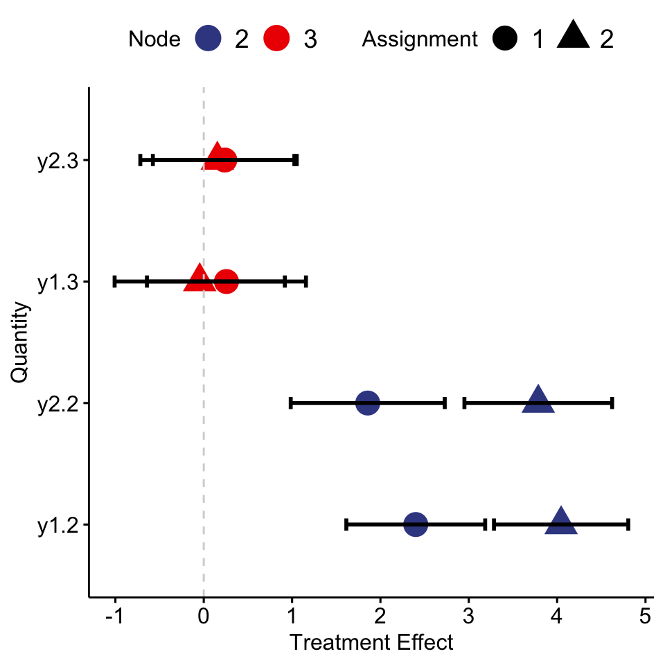

MrS.Rmdlibrary(MrS)To illustrate the idea of how MrS
set.seed(1234)
N = 300
np = 3
numX <- matrix(rnorm(N * np), N, np)
z <- sample(3, N, replace = TRUE) - 1
gender <- sample(c('Male', 'Female'), N, replace = TRUE)
country <- sample(c('US', 'UK', 'China', 'Japan'), N, replace = TRUE)
y1 <- numX[, 1] + numX[, 2] + 2 * z * (gender == 'Female') + rnorm(N)
y2 <- numX[, 3] + numX[, 1] + 2 * z * (gender == 'Female') + rnorm(N)
train <- data.frame(numX, gender, country, z, y1, y2)
role <- c(rep('n', 3), 'c', 'c', 'r', 'd', 'd')fit <- MrSFit(dataframe = train, role = role, bestK = 3,
maxDepth = 3, CVFolds = 10, CVSE = 0.5,
bootNum = 30, alpha = 0.05, display = TRUE, remove=TRUE)## Start data processing:
## Finish processing, start call main function. 0.009689093 s
## Use bootstrap for confidence interval! SLOW!
## finish 10 bootstrap samples.
## finish 20 bootstrap samples.
## Finish tree build. 6.823133 sprint(fit)## ID: 1, gender = { Female, NA }
## ID: 2, Size: 152 [Terminal]
## ID: 1, gender = { Male }
## ID: 3, Size: 148 [Terminal]You can also print details about each node fitting.
print(fit, details = TRUE, digits = 3)## ID: 1, gender = { Female, NA }
## ID: 2, Size: 152 [Terminal]
## Outcome Models:
## y1 Est SE
## X1 1.089
## X2 0.952
## X3 -0.002
## z.0 0.134 0.134
## z.1 1.89 0.205
## z.2 3.929 0.19
## - - - - - - - - - - - - - -
## y2 Est SE
## X1 1.052
## X2 -0.106
## X3 1.003
## z.0 -0.058 0.137
## z.1 2.134 0.209
## z.2 4.155 0.194
## - - - - - - - - - - - - - -
## ID: 1, gender = { Male }
## ID: 3, Size: 148 [Terminal]
## Outcome Models:
## y1 Est SE
## X1 0.995
## X2 0.897
## X3 -0.023
## z.0 0.075 0.137
## z.1 -0.238 0.188
## z.2 -0.277 0.208
## - - - - - - - - - - - - - -
## y2 Est SE
## X1 1.027
## X2 0.039
## X3 1.021
## z.0 -0.065 0.15
## z.1 0.151 0.207
## z.2 0.159 0.229
## - - - - - - - - - - - - - -plotme <- plot(fit)
plotme$treeplotplotme$trtPlot
writeTex(fit, file = 'test.tex')Follow GUIDE, use latex
$ cat test.tex\documentclass[12pt]{article}
%File creation date:2018-11-07 12:13:20
\usepackage{pstricks,pst-node,pst-tree}
\usepackage{geometry}
\usepackage{lscape}
\pagestyle{empty}
\begin{document}
%\begin{landscape}
\begin{center}
\psset{linecolor=black,tnsep=1pt,tndepth=0cm,tnheight=0cm,treesep=.8cm,levelsep=50pt,radius=10pt}
\pstree[treemode=D]{\Tcircle{ 1 }~[tnpos=l]{\shortstack[r]{\texttt{\detokenize{gender}}\\$\in$ { Female, NA\}}}
}{
\Tcircle[fillcolor=red,fillstyle=solid]{ 2 }~{\makebox[0pt][c]{\em 152 }}
\Tcircle[fillcolor=yellow,fillstyle=solid]{ 3 }~{\makebox[0pt][c]{\em 148 }}
}
\end{center}
%\end{landscape}
\end{document}